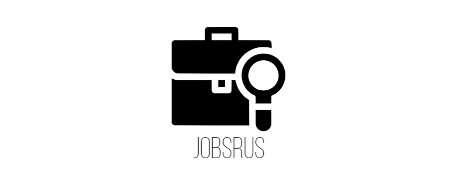

<ion-header>
  <ion-toolbar>
    <ion-buttons slot="start">
      <ion-back-button defaultHref='welcome'></ion-back-button>
    </ion-buttons>
  </ion-toolbar>
</ion-header>

<ion-content>
  <div class="logo-header">
    
  </div>

  <div class="center header">Forgot Password?</div>

  <form class="ion-margin" (ngSubmit)='authService.resetPassword(email)'>
    <ion-item>
      <ion-input type='email' [(ngModel)]='email' [ngModelOptions]="{standalone: true}" placeholder='Enter verification email' clearInput></ion-input>
      <ion-icon name="mail" slot="end"></ion-icon>
    </ion-item>

    <div class="button-container">
      <ion-button class="ion-margin" expand='block' type="submit" color='primary'>Send Reset Link</ion-button>
    </div>
  </form>

  <a routerLink='/welcome' class="center back-login">Back to Sign In</a>
</ion-content>
